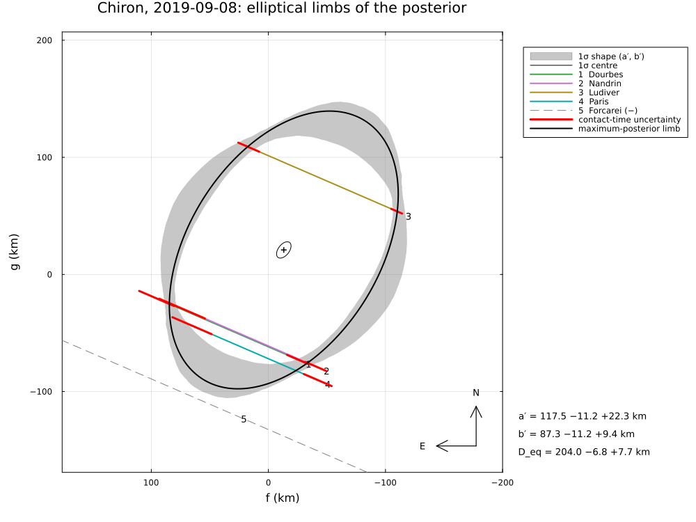
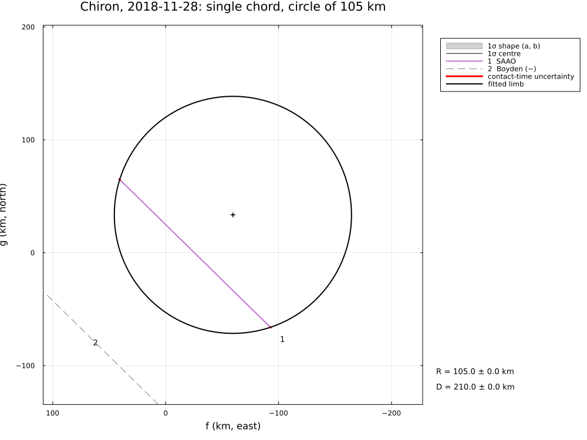

Chiron, 2018 and 2019
Two stellar occultations by the centaur (2060) Chiron, reduced from the published timings of Braga-Ribas et al. (2023), A&A 676, A72: the first multi-chord event on 2019 September 8 (four chords in Belgium and France, one negative chord in Spain) and a single chord observed at SAAO on 2018 November 28 (a negative chord at Boyden). The event of 2022 December 15, which revealed changing material around Chiron (Ortiz et al., 2023), has no tabulated timings and is not included.
The example covers:
- 2019: the limb from three effective chords (Nandrin and Dourbes lie on the same line), with the Paris chord (no reliable time source) shifted; the posterior shows how little three chords constrain an ellipse, the paper restricts it with the thermal diameter;
- 2018: the chord length, the side of the centre from the Boyden negative chord;
- the astrometry of both events.
The data are transcribed in examples/data/chiron_2018_2019.jl, with the stored JPL Horizons ephemerides, so the script runs offline:
julia --project=. examples/chiron_2018_2019.jl [output_dir] (default: examples/output/chiron_2018_2019)The code is not run when the manual is built. The output after each section is that of the last run of examples/chiron_2018_2019.jl, stored in examples/output/chiron_2018_2019/output.txt.
using Occultations, Random, Printf, Statistics
using Plots
import CairoMakie # saves the GeoMakie maps (Makie figures)
include(joinpath(@__DIR__, "standard_figures.jl"))
include(joinpath(@__DIR__, "data", "chiron_2018_2019.jl"))
out = length(ARGS) >= 1 ? ARGS[1] : mkpath(joinpath(@__DIR__, "output", "chiron_2018_2019"))
rng = MersenneTwister(2019)
P = CHIRON_PAPER
q(x) = quantile(x, [0.15865525393145707, 0.5, 0.8413447460685429])
pm(x) = (v = q(x); @sprintf("%.1f −%.1f +%.1f", v[2], v[2] - v[1], v[3] - v[2]))Events and geometry (paper values in parentheses)
e19 = chiron_event(2019)
e18 = chiron_event(2018)
@printf("2019: %d positive and %d negative chords, distance %.2f au (%.2f), shadow velocity %.2f km/s (%.1f)\n",
count(ispositive, e19.chords), count(isnegative, e19.chords), e19.ca.dist_km / 1.495978707e8, P.distance_2019_au,
e19.ca.vel, P.velocity_2019)
@printf("2018: %d positive and %d negative chords, distance %.4f au (%.4f), shadow velocity %.2f km/s (%.2f)\n",
count(ispositive, e18.chords), count(isnegative, e18.chords), e18.ca.dist_km / 1.495978707e8, P.distance_2018_au,
e18.ca.vel, P.velocity_2018)2019: 4 positive and 1 negative chords, distance 17.85 au (17.85), shadow velocity 22.80 km/s (22.8)
2018: 1 positive and 1 negative chords, distance 18.3555 au (18.3538), shadow velocity 5.77 km/s (5.77)2019 September 8: the limb
Paris had no reliable time source: its clock offset is fitted (the paper shifts the chord by +0.9 s). Four chords give eight contacts, the ellipse and the offset six parameters.
r = fit_limb(e19; fit_dt=["Paris"], rng=rng)
@printf("least squares: a′ = %.0f ± %.0f km, ε′ = %.2f ± %.2f, PA = %.0f ± %.0f°, R_eq = %.0f ± %.0f km, χ² = %.2f (%d dof)\n",
r[:equatorial_radius]..., r[:oblateness]..., mod(r[:position_angle][1], 180), r[:position_angle][2],
r[:equivalent_radius]..., r.chi2, r.dof)
@printf("Paris clock offset %+.2f ± %.2f s (paper: +%.1f s)\n", clock_offsets(r)["Paris"]..., P.paris_shift)
for x in check_negative_chords(r)
@printf("negative chord %s: %s, %.0f km from the limb\n", x.chord, x.conflict ? "crosses the limb" : "outside", x.distance)
endThe posterior with the paper's ranges (a′ 90–160 km, ε′ ≤ 0.625) as bounds:
prob = LimbProblem(e19; fit_dt=["Paris"], bounds=Dict(:equatorial_radius => (90.0, 160.0), :oblateness => (0.0, 0.625)))
post = sample(fit(prob; rng=rng); nsteps=6000, rng=rng)
S = samples(post)
col(n) = S[:, findfirst(==(n), post.names)]
d = derived_samples(post; n=6000, rng=rng)
@printf("posterior: a′ = %s km, ε′ = %s, R_eq = %s km\n", pm(col(:equatorial_radius)), pm(col(:oblateness)),
pm(d.equivalent_radius))
@printf("published (R_eq restricted to 98–111 km, Lellouch et al. 2017): a′ = %.0f ± %.0f km, ε′ = %.2f ± %.2f, PA = %.0f ± %.0f°, R_eq = %.0f −%.0f +%.0f km\n",
P.limb.a..., P.limb.oblateness..., P.limb.position_angle..., P.limb.R_equiv...)Without the thermal size the three chords allow a wide range of ellipses; their area-equivalent radius is still close to the thermal one.
least squares: a′ = 117 ± 58 km, ε′ = 0.26 ± 0.64, PA = 53 ± 33°, R_eq = 101 ± 7 km, χ² = 2.20 (2 dof)
Paris clock offset +0.99 ± 0.59 s (paper: +0.9 s)
negative chord Forcarei: outside, 27 km from the limb
posterior: a′ = 119.2 −12.0 +20.5 km, ε′ = 0.3 −0.2 +0.2, R_eq = 102.7 −3.8 +4.0 km
published (R_eq restricted to 98–111 km, Lellouch et al. 2017): a′ = 126 ± 22 km, ε′ = 0.27 ± 0.18, PA = 11 ± 33°, R_eq = 105 −7 +6 km2018 November 28: a single chord
c = e18["SAAO"]
f, g = chord_path(e18, c; segment=:occulted)
@printf("SAAO chord %.1f km (paper %.1f ± %.1f km)\n", hypot(f[end] - f[1], g[end] - g[1]), P.chord_2018...)The paper's chord length is the duration (31.29 s) times the geocentric shadow velocity (5.77 km/s); at this slow event the Earth's rotation adds about 0.2 km/s at SAAO, and the chord measured along the station's track is 6 km longer. A circle of the thermal radius (105 km) fits the chord with its centre on either side; the negative chord at Boyden excludes one of them:
r18 = [fit_limb(e18; model=CircleLimb(), fix=[:radius], init=Dict(:radius => 105.0, :center_g => s * 100.0),
negative=:none, rng=rng) for s in (-1, 1)]
ok = [all(x -> !x.conflict, check_negative_chords(rr)) for rr in r18]
for (rr, o) in zip(r18, ok)
@printf("centre (f, g) = (%5.0f, %5.0f) km: %s\n", rr[:center_f][1], rr[:center_g][1],
o ? "consistent with Boyden" : "the body would have covered Boyden")
end
r18ok = r18[findfirst(ok)]SAAO chord 186.9 km (paper 180.5 ± 0.9 km)
centre (f, g) = ( 7, -35) km: the body would have covered Boyden
centre (f, g) = ( -60, 34) km: consistent with BoydenAstrometry (the paper's Table 7, same star positions)
for (y, rr) in ((2018, r18ok), (2019, r))
t, ra_p, dec_p = P.positions[y]
e = y == 2018 ? e18 : e19
a = astrometry(rr)
ra_, dec_, _ = ephem_radec(e.body, Epoch(t))
r_, d_ = Occultations.offset_radec(ra_, dec_, a.offset_ra, a.offset_dec)
@printf("%s UTC: RA %s Dec %s (σ %.1f, %.1f mas); minus Table 7: Δα cos δ = %+.1f mas, Δδ = %+.1f mas\n", t,
format_ra(r_; digits=5), format_dec(d_; digits=4), a.ra_err, a.dec_err,
(r_ - parse_ra(ra_p)) * cosd(d_) * 3.6e6, (d_ - parse_dec(dec_p)) * 3.6e6)
end2018-11-28T20:50:43.14 UTC: RA 23 46 04.35418 Dec +02 13 05.2582 (σ 0.3, 0.3 mas); minus Table 7: Δα cos δ = -0.1 mas, Δδ = -0.1 mas
2019-09-08T23:04:26.20 UTC: RA 00 10 12.73281 Dec +04 37 05.2622 (σ 0.6, 0.7 mas); minus Table 7: Δα cos δ = +0.2 mas, Δδ = +0.2 masFigures
savefig(plot(post; title="Chiron, 2019-09-08: elliptical limbs of the posterior", size=(1000, 750)),
joinpath(out, "chiron_2019_posterior.png"))
savefig(plot(r18ok; title="Chiron, 2018-11-28: single chord, circle of 105 km", size=(1000, 750)),
joinpath(out, "chiron_2018.png"))
# the standard figures of 2019: limb fits, posterior, maps and the globe
standard_figures("chiron", r; out=out, posterior=post, projection="+proj=laea +lon_0=0 +lat_0=47", limits=(-15, 15, 38, 56),
window=600, marks=60)
println("figures written to ", out)The posterior limbs of 2019, and the single chord of 2018:

